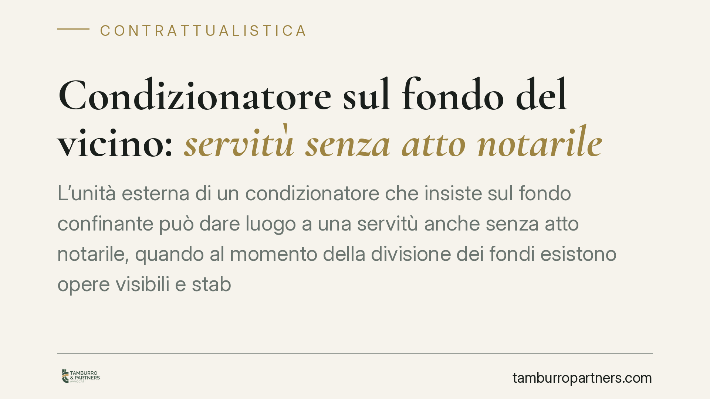

Condizionatore sul fondo del vicino: servitù senza atto notarile
L'unità esterna di un condizionatore che insiste sul fondo confinante può dare luogo a una servitù anche senza atto notarile, quando al momento della divisione dei fondi esistono opere visibili e stabili. Una recente pronuncia della Cassazione lo conferma e ricorda che chi pretende un atto aggiuntivo non previsto rischia conseguenze pesanti sul piano contrattuale.

Il caso
Un promissario acquirente (chi si impegna a comprare con un preliminare) rifiutava di stipulare il rogito definitivo. Sosteneva che la presenza del condizionatore con l'unità esterna appoggiata o passante sul terrazzo confinante imponesse un ulteriore atto notarile per costituire formalmente la relativa servitù. Secondo questa tesi, senza quell'atto il bene sarebbe stato gravato da un vizio.
La Suprema Corte ha respinto l'impostazione. La servitù, in casi come questo, può già essersi costituita per legge, senza necessità di alcun contratto o atto notarile aggiuntivo.
Inquadramento normativo
La servitù è un peso imposto su un fondo (servente) a vantaggio di un altro fondo (dominante). Di norma si costituisce per contratto, ai sensi dell'art. 1058 c.c., che richiede la forma scritta e, per gli immobili, l'atto notarile con trascrizione.
Esiste però un'altra via, prevista dall'art. 1062 c.c.: la costituzione per destinazione del padre di famiglia. Si verifica quando due fondi, originariamente appartenenti allo stesso proprietario, vengono separati (ad esempio con una vendita), e al momento della separazione esiste già un'opera stabile che pone un fondo al servizio dell'altro. In quel momento, e senza bisogno di alcun atto, la situazione di fatto si trasforma automaticamente in servitù.
Il presupposto decisivo è l'apparenza. L'art. 1061 c.c. stabilisce che solo le servitù apparenti — quelle manifestate da opere visibili e permanenti destinate al loro esercizio — possono costituirsi per destinazione del padre di famiglia (oltre che per usucapione). Un'unità esterna di condizionatore stabilmente installata, con tubazioni e staffe a vista, integra tipicamente questo requisito: è visibile, è permanente ed è funzionale al passaggio dell'impianto.
Implicazioni pratiche
Per chi compra, il messaggio è duplice.
Da un lato, non sempre serve un atto notarile aggiuntivo per "regolarizzare" una servitù di questo tipo: se i presupposti dell'art. 1062 c.c. sono soddisfatti, il diritto esiste già. Pretendere un atto non dovuto può configurarsi come un inadempimento del promissario acquirente, non come una legittima richiesta.
Dall'altro, qui entra in gioco il profilo contrattuale della caparra. Se il promissario acquirente si rifiuta di stipulare il definitivo adducendo una pretesa infondata, il promittente venditore può reagire. In presenza di caparra confirmatoria, l'art. 1385, comma 2, c.c. gli consente di recedere dal contratto e trattenere la somma ricevuta. Attenzione: non è un effetto automatico. È la conseguenza di una precisa scelta del venditore (il recesso), legata all'inadempimento della controparte. Il meccanismo, dunque, presuppone un comportamento qualificabile come inadempimento e una reazione formale del contraente non inadempiente.
Resta inteso che la qualificazione del rifiuto come inadempimento dipende dalle circostanze concrete: non ogni contestazione fa scattare la perdita della caparra, ma solo quella priva di fondamento giuridico.
Cosa fare in concreto
- Verificate lo stato dei luoghi prima del preliminare. Accertate se esistono impianti o opere che insistono sui fondi confinanti e da quando sono in essere.
- Ricostruite la storia proprietaria dei fondi. Stabilite se, in passato, servente e dominante appartenevano allo stesso proprietario: è il presupposto dell'art. 1062 c.c.
- Documentate l'apparenza delle opere. Fotografie e perizie sulle installazioni visibili e permanenti sono utili per dimostrare i requisiti dell'art. 1061 c.c.
- Disciplinate la servitù nel preliminare. Anche quando il diritto esiste già per legge, una clausola che ne dia atto previene contestazioni e rifiuti di stipula.
- Valutate con attenzione ogni rifiuto di rogitare. Prima di invocare un ulteriore atto notarile, consigliamo di verificare se la pretesa sia giuridicamente fondata, per non esporsi al recesso e alla perdita della caparra.
Conclusione
Il tema unisce diritti reali e disciplina del contratto. Una servitù può nascere senza notaio; una pretesa infondata in sede di rogito può invece costare la caparra. La differenza, spesso, sta in una verifica preliminare accurata.
---
*Contributo informativo a cura di Tamburro & Partners Avvocati - Avv. Giuseppe Tamburro. Non costituisce parere legale.*
Ogni contratto ha il suo equilibrio.
Se vuoi una revisione delle clausole o una redazione su misura, scrivi allo studio. Ti rispondiamo entro un giorno lavorativo.